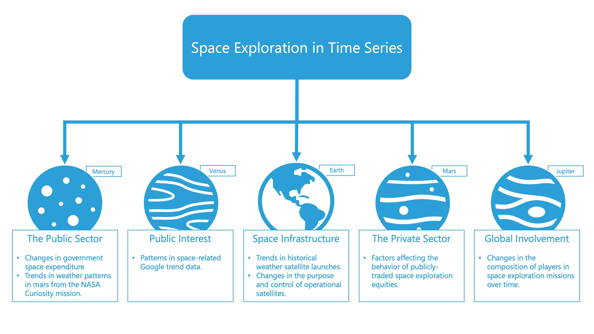

1 Introduction
1.1 Topic Explanation
Space exploration, once the domain of national agencies and science fiction, has evolved into a multifaceted endeavor that encompasses the pursuit of knowledge and the potential for economic growth, technological advancements, and international collaboration. The public support of initiatives, the exploration of Mars, and the financial investment in space ventures represent crucial components of this broader narrative. As humanity reaches out to the cosmos, the implications of these efforts stretch far beyond the immediate scientific discoveries, touching on aspects of environmental stewardship, human survival, and the expansion of our economic sphere.
This project embarks on a research journey that leverages time series techniques and data to uncover space exploration patterns, trends, and insights. At the heart of this endeavor lies the examination of various facets of space exploration, segmented into distinct categories encompassing both the public and private sectors and international participation, detailed next.
1.2 The Big Picture
This study examines the essential elements that have shaped space exploration. It begins by acknowledging the origins of space exploration within the public sector, setting the foundation for subsequent advancements and exploration efforts. From there, we delve into the escalating public interest in space, which fuels further investment and interest in outer space activities. We also analyze the strategic use of space infrastructure, mainly satellites, highlighting their critical role in supporting various functions, from scientific research to commercial applications. Next, the narrative shifts to the dynamic involvement of private enterprises in space missions, making their way into the financial markets by pioneering innovations, reducing costs, and opening new possibilities for space travel and exploration. Lastly, we look at the role of international participation and illustrate how the drive across countries to explore space has grown over time.

1.3 Literature Review
In this review, we explore the transformative dynamics of the space exploration sector, from its economic prospects and technological advancements to governmental investments and the role of private enterprises in shaping the industry.
Space exploration is on the brink of becoming a trillion-dollar industry by 2040, according to Morgan Stanley (2020), propelled by declining launch costs, technological advancements, and increased interest from the public and private sectors. With satellite broadband expected to account for half of this growth, introducing reusable rockets and mass-produced satellites promises to slash expenses further, opening up new possibilities such as high-speed global delivery systems and commercial space travel. Nevertheless, the volatile history of space-related investments is a cautionary note for potential investors.
The unveiling of the James Webb Space Telescope’s first images in 2022 represented a landmark moment in space exploration, highlighting the synergy between major space agencies (NASA, E.S.A., C.S.A.) and the transformative impact of the Fourth Industrial Revolution (Signé & Dooley (2023)). This era is marked by the fusion of technologies across digital, physical, and biological spheres, leading to reduced costs and the proliferation of smaller satellites. These advancements are democratizing space access and bringing in a variety of new participants, including private companies and emerging space nations, despite challenges like geopolitical tensions and the necessity for inclusive, equitable regulations.
On the governmental front, Sadek (2022) predicts a surge in global space exploration investment to $31 billion by 2031, focusing on transportation, orbital infrastructure, and lunar ventures. This increase is buoyed by heightened cooperation across nations and sectors, aiming for a sustainable lunar presence and extended human activity in low Earth orbit. Noteworthy is the diversification of the space exploration field with new entrants like Australia and the U.A.E., alongside significant projects like the Artemis program and the International Lunar Research Station, signaling a shift towards more inclusive and collaborative space endeavors.
NASA’s contributions to the economy and space exploration have been substantial, generating over $71.2 billion in economic output and supporting more than 339,600 jobs in 2021, as reported by Dunbar (2022). This impact stems from its Moon to Mars missions, climate change research, and the creation of high-quality jobs across the United States, underlining NASA’s pivotal role in fostering economic growth and cementing American leadership in global space exploration and science.
Lastly, the space sector has witnessed a remarkable surge in investment, growing to more than $10 billion annually by 2021 from $300 million in 2012 (Bland et al. (2022)). This influx drives innovation and competition, with companies increasingly adopting commercial models and focusing on intellectual property, especially in lower Earth orbit and potential operations between the Earth and the Moon. The industry’s evolution is characterized by strategic mergers, product innovation, and a disruptive approach to securing market dominance, indicating a dynamic and competitive future landscape for space exploration and utilization.
1.4 Analytical Angles
The analytical approach to this project consists of five distinct angles, each designed to portray a different side of space exploration.
Public Sector Space Exploration
We start by delving into the public sector’s contributions, highlighted by data from the Mars Curiosity Rover, which provides a window into the Martian climate. Additionally, we analyze government spending patterns in space exploration, offering a lens through which we can assess national priorities and commitments to space endeavors.
Public Interest in Space Exploration
Public interest in space exploration, an equally crucial aspect, is examined through Google Trends data. This perspective reveals the flow of engagement with space-related topics, reflecting changing changing curiosity over time.
Use of Space Infrastructure
The use of space infrastructure is another crucial area of focus. By examining data on meteorological satellite launches and the current satellites orbiting Earth, we gain insights into the operational aspects of space assets and their critical role in global communication, weather forecasting, and environmental monitoring.
Private Sector Space Exploration
Next, we examine the private sector, particularly in the growing area of commercial space activities, through the lens of the ARKX Space Exploration ETF. This dataset sheds light on the financial dimensions of space exploration and highlights the growing importance of private companies in advancing the frontiers of space.
International Participation in Space Exploration
Lastly, international participation in space exploration is evaluated through a database of launches by country. This analysis provides a global overview of space endeavors, highlighting the collaborative and competitive dynamics that fuel the pursuit of knowledge and opportunities beyond our planet.
1.5 Guiding Questions
- How do weather patterns on Mars compare over time, and what implications might these have for future manned missions?
- How has government expenditure on space exploration evolved over the past decade, and what trends can be identified in the allocation of resources to different space activities?
- How does public interest in space exploration respond to major space exploration events or milestones?
- What trends can be identified in the launch of meteorological satellites, and how does this reflect the global emphasis on weather monitoring and climate change?
- How has the number and type of satellites in orbit changed over time, and what does this indicate about the evolving uses of space?
- What investment trends can be discerned from the ARKX Space Exploration ETF data, and how do these reflect the private sector’s confidence in space exploration as a viable industry?
- How does the performance of the ARKX ETF correlate with major announcements or achievements by private space companies?
- Analyzing the launches by country database, can we identify temporal trends in international participation and leadership in space exploration?
- How do the activities in the public sector of space exploration influence trends and interests in the private sector, and vice versa?
- Can we identify patterns or cycles in government spending on space exploration, and how do these align with political or economic cycles?